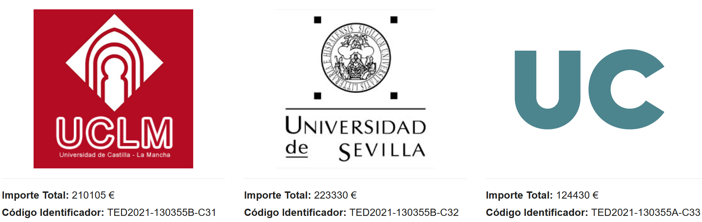

CIBEL Apps

CIBEL Web

CIBEL Advisor

IoT Guardian
Hapi Security

ROMA

OntoCarmen

Patentes
NÚMERO DE ASIENTO REGISTRAL 16 / 2024 / 5448 Título: CIBEL (CIber angEL). Aplicación para la gestión de la seguridad y la sostenibilidad asociada al uso de dispositivos IoT Objeto de propiedad intelectual: Programa de ordenador Clase de obra: Programa de ordenador Autores: Carlos Blanco, Juan María Rivas, Diego García, Alina Solonaru, Alberto Moro Fecha: 30 de agosto de 2024 NÚMERO DE ASIENTO REGISTRAL 16 / 2024 / 5449 Título: CIBELApps (CIber angEL Apps). Aplicación para la gestión de la seguridad y la sostenibilidad asociada al uso de aplicaciones móviles Objeto de propiedad intelectual: Programa de ordenador Clase de obra: Programa de ordenador Autores: Carlos Blanco, Juan María Rivas, Diego García, Alina Solonaru, Alberto Moro Fecha: 30 de agosto de 2024Publicaciones
Revistas
Autores (p.o. de firma): D. G.Rosado, A. Santos-Olmo, L.E. Sánchez, M. Serrano, C.Blanco, H. Mouratidis y E. Fernández-Medina Título: Managing Cybersecurity Risks of Cyber-Physical Systems: The MARISMA-CPS pattern Referencia revista / libro: Computers in Industry Volumen: 142 Fecha: 2022 ISSN: 0166-3615 DOI: 10.1016/j.compind.2022.103715 JCR Factor de Impacto: 10 (Q1) Computer Science: Interdisciplinary Applications 8/110 (Q1) SJR (SCImago Journal Country Rank): 2,65 (Q1) Descarga Autores (p.o. de firma): M. Serrano, L.E. Sánchez, A. Santos-Olmo, D. G.Rosado, , C.Blanco, V. Barletta, D. Caivano y E. Fernández-Medina Título: Minimizing incident response time in real-world scenarios using quantum computing Referencia revista / libro: Software Quality Journal Volumen: Páginas, inicial: final: Fecha: 2023 ISSN: 0963-9314 DOI: 10.1007/s11219-023-09632-6 JCR Factor de Impacto: 1,9 (Q3) Computer Science: Software Engineering 67/108 (Q3) SJR (SCImago Journal and Country Rank): 0,54 (Q1) Descarga Autores (p.o. de firma): A. Santos-Olmo, L.E. Sánchez, D. G.Rosado, M. Serrano, C.Blanco, H. Mouratidis y E. Fernández-Medina Título: Towards an integrated risk analysis security framework according to a systematic analysis of existing proposals Referencia revista / libro: Frontiers of Computer Science Volumen: 18 (3) Páginas: 183808 Fecha: 2023 ISSN: 2095-2228 DOI: 10.1007/s11704-023-1582-6 JCR Factor de Impacto: 4,2 (Q1) Computer Science: Software Engineering 25/108 (Q1) SJR (SCImago Journal and Rank): 0,79 (Q1) Descarga Autores (p.o. de firma): C. Blanco, D. G. Rosado, A.J. Varela-Vaca, M.T. Gómez-López, E. Fernández-Medina, Título: Onto-CARMEN: Ontology-driven approach for Cyber–Physical System Security Requirements meta-modelling and reasoning, Referencia revista / libro: Internet of Things Volumen: 24 Páginas: 100989 Fecha: 2023 ISSN 2542-6605 DOI: https://doi.org/10.1016/j.iot.2023.100989 JCR Factor de Impacto: 5,9 (Q1) Computer Science: Information Systems 35/158 (Q1) SJR (SCImago Journal and Rank): 1,474 (Q1) Descarga Autores (p.o. de firma): M. Paneque, MM. Roldán-García, C. Blanco, A. Maté, D. G. Rosado, J. Trujillo, Título: An ontology-based secure design framework for graph-based databases, Referencia revista / libro: Computer Standards & Interfaces, Volumen: 88 Páginas: 103801 Fecha: 2024 ISSN 0920-5489 DOI: https://doi.org/10.1016/j.csi.2023.103801 JCR Factor de Impacto: 5 (Q1) Computer Science: Software Engineering 17/108 (Q1) SJR (SCImago Journal and Rank): 1,199 (Q1) Descarga Autores (p.o. de firma): C. Blanco, L.E. Sanchez, A. Santos-Olmo Título: QISS: Quantum-Enhanced Sustainable Security Incident Handling in the IoT Referencia revista / libro: Information Special Issue: Quantum Information Processing and Machine Learning Volumen: 15 Páginas: 181 Fecha: 2024 ISSN: 2078-2489 DOI: 10.3390/info15040181 JCR Factor de Impacto: 3.1 (Q2) (en JCR 2022) Computer Science: Information Systems 120/251 (Q2) SJR (SCImago Journal and Rank): 0,66 (Q2) Descarga Autores (p.o. de firma): L.E. Sanchez, A. Santos-Olmo, D.G. Rosado, C. Blanco, M. Serrano, H. Mouratidis, E. Fernández-Medina Título: MARISMA: A Modern and Context-aware Framework for Assessing and Managing Information Cybersecurity Risks Referencia revista / libro: Computers Standards & Interfaces Volumen: 92 Páginas: 103935 Fecha: 2025 ISSN: 0920-5489 DOI: https://doi.org/10.1016/j.csi.2024.103935 JCR Factor de Impacto: 3,6 (Q1) (en JCR 2023) Computer Science: Software Engineering 20/131 (Q1) SJR (SCImago Journal Country Rank): 1,14 (Q1) DescargaCongresos
Antonio Santos-Olmo, David G. Rosado, Luis E. Sánchez, Carlos Blanco, Manuel A. Serrano, Eduardo Fernández-Medina Perspectiva de la Ciberseguridad en el Grado de Ingeniería Informática de la ESI en la UCLM Jornadas sobre la Enseñanza Universitaria de la Informática (JENUI 2023) Publicación: Proceedings Volumen 8: Pags: 287-294 ISBN: 2531-0607 Lugar celebración: Granada (España) Fecha: 5-7 de julio de 2023 Descarga Autores: M.A. Serrano, L.E. Sánchez, A. Santos Olmo, D. García Rosado, C. Blanco, V. Santa Barletta, D. Caivano, E. Fernández Medina Título: Minimización del tiempo de respuesta a incidentes en entornos reales usando computación cuántica Tipo de participación: Comunicación Congreso: Jornadas Nacionales de Investigación en Ciberseguridad (JNIC) Publicación: Proceedings Lugar celebración: Vigo (España) Fecha: 21-23 junio 2023 Descarga Autores: D.G. Rosado, A. Santos Olmo, L.E. Sánchez, M.A. Serrano, C. Blanco, H. Mouratidis, E. Fernández Medina Título: Managing Cybersecurity Risks of Cyber-Physical Systems: The MARISMA-CPS pattern Tipo de participación: Comunicación Congreso: Jornadas Nacionales de Investigación en Ciberseguridad (JNIC) Publicación: Proceedings Lugar celebración: Vigo (España) Fecha: 21-23 junio 2023 Descarga C. Blanco, D.G. Rosado, Á. Varela-Vaca, M. Gómez y E. Fernandez-Medina Onto-CARMEN: un enfoque basado en ontologías para el razonamiento y el metamodelado de requisitos de seguridad de los sistemas ciberfísicos Jornadas de la Sociedad de Ingeniería de Software y Tecnologías de Desarrollo de Software Lugar celebración: Ciudad Real (España) Fecha: 12-14 de septiembre de 2023 Descarga M.A. Serrano, L.E. Sanchez, A. Santos-Olmo, D.G. Rosado, C. Blanco, E. Fernandez-Medina Towards a Quantum World in Cybersecurity Land Cyber Security Education for Industry and Academia (CSE4IA 2023) Lugar celebración: Cagliari (Italia) Fecha: 6 de junio de 2023 CEUR Workshop Proceedings (CEUR-WS.org) Descarga Blanco Bueno, C., Rosado, D., Varela Vaca, A. J., Gómez López, M. T., Fernandez-Medina, E.: Onto-CARMEN: Ontology-driven approach for Cyber-Physical System Security Requirements meta-modelling and reasoning. In: Rodríguez Luaces, M. A. (ed.) Actas de las XXVIII Jornadas de Ingeniería del Software y Bases de Datos (JISBD 2024). Sistedes (2024). https://hdl.handle.net/11705/JISBD/2024/59 Descarga Paneque, M., Roldan-Garcia, M. D. M., Blanco, C., Maté, A., G.Rosado, D., Trujillo, J.: An ontology-based secure design framework for graph-based databases. In: Rodríguez Luaces, M. A. (ed.) Actas de las XXVIII Jornadas de Ingeniería del Software y Bases de Datos (JISBD 2024). Sistedes (2024). https://hdl.handle.net/11705/JISBD/2024/64 Descarga
Financiado por el Ministerio de Ciencia e Innovación y Fondos NextGenerationEU
